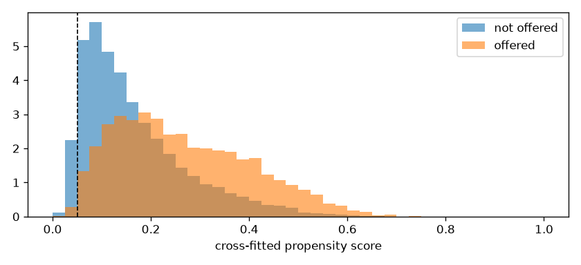

Meta-learners, causal forests, validation on randomised data, uplift.
Day 3 · Rules offline
Logged decisions, weighted and augmented values, heavy weights, a review.
Day 4 · A policy
A rule under a budget, a fairness audit, the trial that would confirm it.
Day 5 · Capstone. A policy evaluation for one of three synthetic briefs, in a public repository, defended for 15 minutes while the assessor changes the budget.
One case study all week
Fursa Employment Agency has one coaching place for every five job seekers
A fictional public agency with six regions and twelve offices. You are Ohood Al-Saqabi, senior data scientist.
The pilot
6,000 seekers; coaching decided by lottery within each office; employment within six months.
The logs
40,000 caseworker decisions, 60 confounders and the offer probability the allocation tool recorded.
The truth
The generator wrote each seeker's chance with and without coaching. Real data never give you this.
How this course works
Every lab starts from supplied files and checks itself against the truth
Notebooks in labs/, run with uv on a laptop or in Colab. No model is called or downloaded.
Each lab loads its own reference state: no lab needs another.
Checks print ✅ or ❌; a safety net lets later cells run if an exercise is unfinished.
Set DS402_QUICK=1 on a slow laptop: 10,000 decisions instead of 40,000.
AI policy. AI off for the supervised check and for each day's first estimator (Labs 1.3, 2.1, 3.1, 4.1). In the other labs an assistant may give hints, not finished code. In the capstone, anything goes, with assisted steps in a verification note.
The director's inbox
Three questions that sound alike and ask for three different numbers
Q1
Did coaching help the job seekers we offered it to in 2025 and 2026?
Q2
Next year we have one coaching place for every five job seekers. Who should get them?
Q3
Our risk score finds the people least likely to find work. Should places go to the highest scores?
Before any method
An estimand has five parts, and the method comes after all five
Part
Q1, written out
Population
Seekers offered coaching in 2025 and 2026
Treatment
Coaching as offered
Comparison
No coaching, for the same seekers
Outcome
Employed within six months of registration
Summary
Average difference: the effect on the offered (ATT)
Four summaries you will use all week
Average effects describe people; a policy value describes a rule
ATE
Mean of Y(1) - Y(0) over everyone.
ATT
The same mean over those who were treated.
CATE
τ(x): the mean effect for seekers who look like x.
Policy value
V(π): mean outcome if rule π decided.
Q1 is an ATT. Q2 is a policy value under a budget. Q3 compares two policy values.
Why the budget matters
With one place per five seekers, the question becomes a ranking
Treat-all is not on the table: 20% of seekers get a place.
The best rule gives places to the largest effects, not the largest needs.
A rule's gain is the sum of the effects of the seekers it picks.
So the estimand of Q2 needs the CATE, then the value of a rule built from it.
1 in 5
places per job seeker next year
The idea the week turns on
Risk is the outcome without coaching; benefit is the difference coaching makes
Risk score
Predicts Y(0): who will not find work without help. Built to find need.
Benefit
Y(1) - Y(0): who finds work because of coaching. Small for those who find work anyway, and for those who do not either way.
What goes wrong. A model with a high AUC for the outcome says nothing about who benefits. Ranking by it fills places with seekers coaching does not move.
The pilot, by risk decile (Lab 1.1)
Employment falls steadily with risk; the effect of coaching does not follow
Risk decile
1
2
3
4
5
6
7
8
9
10
Employed without coaching
77%
69%
67%
64%
58%
53%
60%
46%
39%
24%
Effect of coaching (points)
4.4
10.8
13.0
9.3
15.7
15.5
5.4
13.7
14.3
4.4
600 seekers per decile; each effect has a standard error of 3 to 4 points. Randomised pilot, coached minus uncoached.
The size of the trap (Lab 1.1, with the generator's truth)
Places by risk would buy less than half the jobs that places by benefit buy
Top fifth by benefit23.7 points
Top fifth by risk9.5 points
Every seeker10.2 points
Mean true effect of coaching in each group. Only 24% of the risk fifth is also in the benefit fifth.
Checkpoint
Which estimand answers the director's third question?
Wijdan asks whether next year's places should go to the highest risk scores. Which quantity should you estimate first?
The AUC of the risk score for unemployment at six months
The value of top-fifth-by-risk against top-fifth-by-effect, same budget
The effect of coaching on the seekers offered it in 2025
The average effect of coaching over all seekers
Why. Q3 compares two rules under the same budget, so its estimand is a difference in policy values. The score's accuracy and the average effect describe other things.
Recap from DS-303
The propensity score summarises why a seeker was offered coaching
e(x) = P(offered | x), estimated from the confounders.
Given no hidden confounders, comparing seekers with equal e(x) compares like with like.
Balance and overlap are checked, never assumed.
DS-303, Day 2
Logistic propensity, matching, weighting, trimming and augmented weighting are taught there. Here they run on 60 confounders with flexible models.
The assumption every method needs
Positivity: every kind of seeker had some chance of each decision
Where it holds
Offered and not offered seekers look alike somewhere: the logs show what coaching did for people like them.
Where it fails
A group never offered coaching has no offered twin. Any number for them comes from a model's extrapolation.
What goes wrong. Weighting divides by e(x). A score of 0.01 makes one decision count like a hundred.
Flexible models need honest predictions
Score each decision with a model that never saw it
Most decisions overlap; a thin tail of seekers was almost never offered

Cross-fitted propensity scores by arm. Dashed line: 0.05.
The overlap map (Lab 1.2)
Disabled seekers in Nijad and Rumh, the long-term unemployed and the over-55s were almost never offered
Region
Disability
Months unemployed
Age
Decisions
Offered
Nijad
yes
over 36
55 or under
38
0.0%
Nijad
yes
13 to 36
55 or under
94
1.1%
Nijad
yes
0 to 12
55 or under
65
1.5%
Sahil
no
0 to 12
over 55
202
2.0%
Nijad
no
over 36
55 or under
444
2.3%
Rumh
yes
0 to 12
55 or under
362
3.6%
Six of the twelve cells with at least 30 decisions and an offer rate under 5%. Together the twelve hold 4.6% of decisions.
Two honest options
Trimming changes the estimand; keeping the seekers changes what you can claim
Trim at 0.05
Drops 5% of decisions. The estimate is now the effect for seekers caseworkers actually consider. Say who left.
Keep everyone
The estimate covers the mapped groups only through the outcome model. Say so, and give no group number there.
What goes wrong. Trimming quietly, then reporting the result as the effect for "all job seekers".
Checkpoint
What does a propensity AUC of 0.95 tell you?
A colleague's propensity model for the 2026 offers has a cross-fitted AUC of 0.95 and calls it excellent. What do you conclude?
The adjustment will be reliable because the model fits well
Employment within six months is easy to predict from the logs
Decisions are nearly determined by the covariates, so overlap is probably poor
Cross-fitting has already solved any extreme-weight problem
Why. A propensity model that separates the arms well means similar seekers rarely received different decisions. That is the definition of poor overlap.
Why the old tools struggle
Sixty confounders, and caseworkers who used them in curves and combinations
13 named attributes, the risk score and 46 fields of administrative history.
Offers depend on some fields through thresholds and interactions.
A linear regression with 60 controls assumes straight lines for all of them.
A flexible model fits the curves, but its predictions carry bias of their own.
60
confounders in the logs
The tempting shortcut
Plugging machine learning predictions into an effect formula passes their bias straight through
Plug-in
Fit m1, m0, average m1(x) - m0(x). Regularisation shrinks the models, and the effect shrinks or shifts with them.
Same-data fitting
Fit and predict on the same rows: residuals look too small, intervals too narrow.
Two fixes, together. An orthogonal score so small model errors cancel to first order, and cross-fitting so no decision helps predict itself.
The interactive regression model
The DML score is the augmented weighting score of DS-303, with cross-fitted parts
Examples, not endorsements. EconML's LinearDML, CausalML and grf for R estimate the same quantity. Write it by hand once, then use a library you can check.
Regression with 60 controls missed by three points; double machine learning did not
Method
Estimate
95% interval
Bias
Naive difference
14.1
+3.7
Regression adjustment
13.5
12.4 to 14.7
+3.1
DML by hand
11.0
9.7 to 12.3
+0.5
DoubleML
10.8
9.6 to 12.1
+0.4
Percentage points of employment within six months. Average effect over all logged decisions.
Checkpoint
Why fold the data before fitting the nuisance models?
A colleague fits the propensity and outcome models on all 40,000 decisions, then plugs their predictions into the same score. What is the main risk?
The fit takes five times longer than with folds
The estimate targets the effect on the offered instead of everyone
No risk: the orthogonal score makes nuisance errors irrelevant
Overfitted predictions shrink the residuals, biasing the estimate and its interval
Why. A flexible model that has seen a decision predicts it too well. Its residual in the score is too small, which biases the estimate and makes the interval too narrow.
Lab 1.4, 40,000 decisions, true effect 10.5
The same score with four learners gave answers three points apart
Gradient boosting11.0
Lasso logistic12.8
Random forest12.9
One split14.2
Estimates in points; standard errors 0.6 to 0.7. The learner with the lowest out-of-fold loss for the offer was the closest.
A rule you can defend
Choose nuisance learners by out-of-fold loss, before you see the estimate
Learner
Offer log loss
Outcome log loss
Bias
Gradient boosting
0.427
0.601
+0.6
Random forest
0.439
0.608
+2.5
Lasso logistic
0.447
0.603
+2.3
One split
0.469
0.640
+3.8
What goes wrong. Trying learners until the estimate looks right is a forking path: the interval no longer means what it says.
A system change
The 2027 extract lost the caseworkers' motivation note, and the estimate rose by almost two points
11.0 → 12.7
points, with and without motivation, cross-fitted by hand (truth 10.5)
Motivated seekers were offered coaching more often.
They also found work more often, coached or not.
Without the column, coaching gets the credit.
No learner can recover information that is not in the data.
Sensitivity for causal machine learning
Two numbers describe a hidden confounder: how much it explains of the outcome and of the offer
cf_y
Share of the outcome's remaining variation the confounder would explain.
cf_d
How much it would change the weights of the offer model.
A confounder of strength 0.03 could move the estimate anywhere from 8.4 to 17.2 points
12.8
DoubleML estimate on the extract
8.4 to 17.2
bound at cf_y = cf_d = 0.03
8.5%
robustness value
For the director. "Coaching helped" survives a hidden factor weaker than 8.5% on both sides. "By 12.8 points" survives almost nothing.
Limits
A bound tells you how strong something missing would have to be, not whether it exists
Ask the people who made the decisions what they saw that the data do not hold.
Benchmark against an observed covariate the caseworkers would recognise.
Report the robustness value next to the estimate, every time.
When the bound is wide, the answer is a randomised trial, which Day 4 designs.
Checkpoint
Can a better learner fix the 2027 extract?
On the 2027 extract, without the motivation note, a colleague proposes to switch from gradient boosting to a deep neural network to remove the bias. What do you tell her?
Yes: a more flexible model can learn motivation from the other columns
No: report the estimate with a sensitivity bound and its robustness value
Drop more columns so the model cannot overfit the remaining ones
Raise the folds from five to ten to reduce the bias
Why. Bias from an omitted confounder comes from information absent from the data. Only a sensitivity analysis, a new column or a randomised comparison addresses it.
Day 1 recap
An estimand first, overlap second, then an orthogonal score with honest folds
Risk is not benefit
The top fifth by risk gained 9.5 points, by benefit 23.7.
Overlap first
4.6% of decisions sit in groups almost never offered: name them.
DML, then bounds
10.8 against a truth of 10.5; a missing column moves it, a bound says how far.
Tomorrow · Day 2
Who benefits: effects for each seeker, checked before anyone is targeted
Tomorrow you estimate conditional effects on the randomised pilot with three meta-learners and a causal forest, validate them on held-out data, and draw the uplift curves that turn them into places.